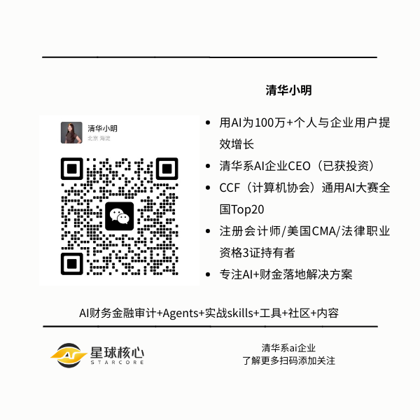

整理了 12 个面向金融分析的 Claude 提示词，覆盖了从 DCF 估值、三大报表建模、并购分析到 LBO、IPO 定价的完整链条。
每一条提示词都模拟了华尔街顶级机构的分析师角色——高盛、摩根士丹利、摩根大通、KKR、黑石、花旗、巴克莱、Lazard、Evercore……你能叫得出名字的，全在里面。
这些不是泛泛的"帮我分析一下这家公司"——每条提示词都给出了极其详细的输出要求：具体要哪些模块、用什么格式呈现、包含哪些假设和情景。
用法很简单：把括号 [ ] 里的内容替换成你要分析的具体公司或交易信息，粘贴到 Claude 里就能用。以下是完整的 12 条提示词。
1. DCF 估值模型
你是高盛的高级分析师。我需要为 [公司名称] 建立一个完整的 DCF（折现现金流）估值模型。
请提供：
✦自由现金流预测：未来 5 年，包含增长假设
✦WACC 计算：股权成本 + 债务成本的细分
✦终值：永续增长法和退出倍数法两种
✦敏感性分析：不同假设下价值如何变化
✦折现率理由：为什么选择这个 WACC
✦关键驱动因素：现金流上升或下降的原因
✦可比公司：我们的假设与同行相比如何
✦估值范围：牛市、基准、熊市三种情景
以投资银行路演手册估值页的格式呈现，包含清晰公式。
公司：[描述公司、行业、财务数据]
2. 三张财务报表模型
你是摩根士丹利的副总裁。我需要为 [公司名称] 建立完整的三大报表模型。
请提供：
✦利润表：收入、成本、EBITDA、净利润（5 年）
✦资产负债表：资产、负债、权益（5 年）
✦现金流量表：经营、投资、融资活动（5 年）
✦报表联动公式：净利润 → 现金流 → 资产负债表的连接方式
✦营运资本：应收账款、存货、应付账款的变化
✦债务时间表：本金偿还和利息支出
✦关键假设：收入增长、利润率、资本支出占销售比例
✦错误检查：资产负债表平衡和循环引用
以 Excel 风格模型格式呈现，用通俗英文解释公式。
公司：[描述业务、当前财务、成长阶段]
3. 并购增厚/稀释分析
你是摩根大通的董事总经理。我需要为 [收购方] 收购 [目标公司] 进行增厚/稀释分析。
请提供：
✦交易结构：现金与股票比例及总对价
✦备考利润表：合并后公司盈利
✦EPS 影响：增厚或稀释百分比
✦协同效应：成本节约和收入机会（金额）
✦资金来源：债务、手头现金或增发股票
✦信用影响：债务/EBITDA 比率变化
✦盈亏平衡分析：需要多少协同效应才能增厚
✦敏感性表格：不同购买价格下的 EPS 影响
以并购分析备忘录格式呈现，包含交易推荐。
交易：[描述收购方、目标公司、交易规模、理由]
4. 杠杆收购（LBO）模型
你是 KKR 的私募股权助理。我需要为 [公司名称] 建立完整的 LBO 模型。
请提供：
✦来源与用途：交易资金来源（债务、股权、费用）
✦债务结构：高级债、次级债、利率、契约
✦现金流清扫：超额现金如何偿债
✦退出情景：第 5 年战略出售或 IPO
✦IRR 计算：股权投资者的内部收益率
✦现金对现金倍数：总收益除以投入股权
✦债务偿还时间表：逐年本金减少
✦管理层假设：EBITDA 增长和利润率改善
以私募股权投资委员会备忘录格式呈现，包含回报分析。
公司：[描述公司、EBITDA、要价、行业]
5. 可比公司分析（Comps）
你是花旗的股票研究分析师。我需要为 [公司名称] 进行交易可比公司分析。
请提供：
✦同业组：10-15 家同行业上市公司
✦交易倍数：EV/EBITDA、EV/Revenue、P/E
✦财务指标：收入、EBITDA、利润率对比
✦估值范围：25%、中位数、75% 倍数
✦隐含估值：按各倍数公司价值
✦调整理由：为什么公司应享有溢价或折价
✦增长对比：公司增长与同行比较
✦质量筛选：哪些同行最可比及原因
以可比公司估值表格格式呈现，倍数高亮。
公司：[描述公司、财务、最接近竞争对手]
前 5 个提示词覆盖了投行最核心的估值工具箱：DCF 定绝对价值，三大报表是一切建模的基础，并购分析看交易可行性，LBO 算私募回报，Comps 给出市场参照。接下来的 7 个，继续深入。
6. 先例交易分析
你是 Lazard 的并购银行家。我需要为 [公司/行业] 进行先例交易分析。
请提供：
✦交易范围：过去 5 年 15-20 笔相关并购
✦交易倍数：各笔交易的 EV/EBITDA、EV/Revenue
✦交易特征：买方、卖方、规模、日期、理由
✦溢价分析：相对于交易前股价的控制权溢价
✦估值范围：25%、中位数、75% 倍数
✦交易调整：战略 vs 财务买家、协同水平
✦市场环境：并购市场随时间变化
✦隐含估值：基于先例的公司价值
以并购估值分析格式呈现，包含交易可比表。
公司：[描述公司、行业、潜在买家]
7. IPO 估值与定价分析
你是巴克莱的资本市场银行家。我需要为 [公司名称] 进行 IPO 定价分析。
请提供：
✦发行结构：主发行 vs 次级股份，总募集金额
✦发行前估值：IPO 前公司价值
✦发行后估值：IPO 后公司价值
✦可比 IPO：同行业近期交易及定价倍数
✦估值范围：低、中、高每股价格情景
✦稀释分析：现有股东稀释程度
✦流通股分析：公开交易股份占比
✦首日涨幅预期：该行业典型折价水平
以 IPO 定价备忘录格式呈现，推荐股价范围。
公司：[描述公司、财务、IPO 规模、可比]

8. 信用分析与债务容量模型
你是瑞信的杠杆融资银行家。我需要为 [公司名称] 进行债务容量分析。
请提供：
✦EBITDA 分析：过去 3 年及未来 3 年预测
✦杠杆比率：行业标准总债务/EBITDA
✦利息覆盖：EBITDA/利息支出最低要求
✦债务结构：高级担保、无担保、次级层级
✦契约：财务维持测试（杠杆、覆盖率）
✦最大债务：公司可负责任借款上限
✦定价网格：不同杠杆水平下的利率
✦再融资分析：现有债务到期及展期需求
以信用备忘录格式呈现，推荐债务容量。
公司：[描述公司、当前债务、EBITDA、行业]
第 6-8 条提示词，分别从历史交易锚定估值、IPO 市场化定价、以及债务侧信用分析三个角度，补全了估值的完整拼图。接下来是更高阶的综合分析框架。
9. 部分之和（SOTP）估值
你是 Evercore 的重组顾问。我需要为 [公司名称] 进行部分之和估值。
请提供：
✦业务分部：将公司拆分为独立运营部门
✦分部财务：各部门的收入、EBITDA、利润率
✦估值方法：每个部门最适合的方法（DCF、可比、倍数）
✦分部价值：每个业务单元单独估值
✦公司成本：总部费用分配或剔除
✦债务分配：债务如何分配到各部分
✦总价值：各部分之和减债务加现金
✦每股价值：SOTP 分析隐含股价
以重组分析格式呈现，包含拆分估值情景。
公司：[描述公司、业务分部、财务]
10. 运营模型与单位经济
你是 General Atlantic 的成长型股权投资者。我需要为 [公司名称] 建立详细运营模型。
请提供：
✦收入构建：按客户、产品或地域自下而上预测
✦单位经济：CAC、LTV、回本期、单位毛利
✦队列分析：不同客户批次随时间表现
✦关键驱动：收入和成本变动因素
✦情景规划：上行、基准、下行假设
✦烧钱率：每月现金消耗及跑道计算
✦盈亏平衡分析：何时现金流转正
✦规模假设：增长如何改善单位经济
以运营模型格式呈现，第 1 年月度预测，第 2-3 年季度。
公司：[描述商业模式、当前指标、增长率]
11. 敏感性与情景分析
你是瑞银的风险管理副总裁。我需要为 [公司/模型] 进行敏感性和情景分析。
请提供：
✦单变量敏感性：一个变量变化时价值如何变动（收入增长、利润率、WACC）
✦双变量敏感性：两个变量同时变化的影响
✦情景构建：最佳（全正面）、基准（最可能）、最差（全负面）
✦蒙特卡洛输入：关键假设的概率分布
✦盈亏平衡分析：交易成功需要什么条件
✦下行保护：最坏情况前能承受多大损失
✦风险因素：对价值影响最大的前 5 个假设
✦对冲策略：如何保护关键风险
以风险分析备忘录格式呈现，包含敏感性表和情景结果。
模型：[描述估值、关键假设、风险因素]
12. 投资委员会备忘录
你是黑石的合伙人。我需要为 [交易/公司] 撰写投资委员会备忘录。
请提供：
✦执行摘要：机会 3 段概述（投资论点、回报、风险）
✦交易概述：结构、规模、资金用途、时间表
✦公司分析：商业模式、竞争地位、财务表现
✦行业分析：市场规模、增长、趋势、竞争动态
✦投资论点：为什么这个交易能赚钱（3-5 点关键）
✦估值总结：多种方法及足球场图描述
✦回报分析：IRR、现金对现金倍数、退出情景
✦风险评估：前 5 大风险及缓解策略
✦推荐：投资或放弃，附明确理由
以投资委员会演示提纲格式呈现。
交易：[描述机会、交易条款、预期回报]
12 条提示词，12 个顶级机构角色，覆盖了投资银行和私募股权最核心的分析框架。把括号里的内容换成你要研究的公司，直接粘贴到 Claude 就能跑。
怎么用效果最好？
✦替换占位符：每条提示词末尾的 [ ] 里，填入具体公司名、行业、财务数据。信息越详细，输出越精准。
✦组合使用：先用 #2 建三大报表模型，再用 #1 做 DCF，用 #5 做 Comps，最后用 #12 写投资备忘录——串起来就是一套完整的尽调流程。
✦迭代优化：第一轮输出后，针对具体假设追问。比如"WACC 假设太保守了，用 12% 重新算一遍"或"加入中国市场的增长情景"。
✦用 Claude 的最强模型：这类深度分析建议使用 Claude Opus 或同级别模型，推理链越长，输出质量越高。
过去，这些分析是投行 Analyst 和 Associate 们用 Excel 熬夜做出来的。现在，一条提示词，几分钟。
工具在那里，就看谁先用起来。
📌 加入「星球财金AI」社群
获取更多 AI + 金融的实战提示词、建模模板和深度拆解。用 AI 武装你的分析能力，不做被淘汰的那个人。
— ✦ —
参考来源：X @heynavtoor 帖子线程（12 Claude Prompts for Finance）